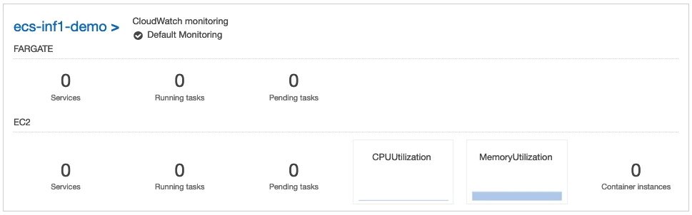
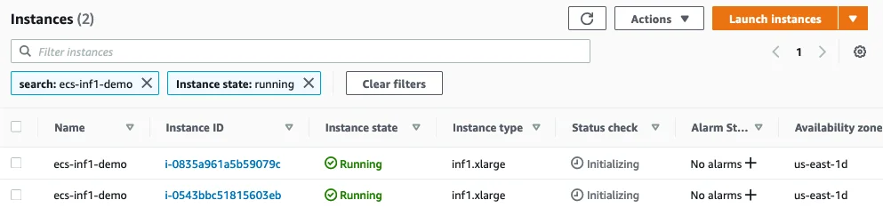
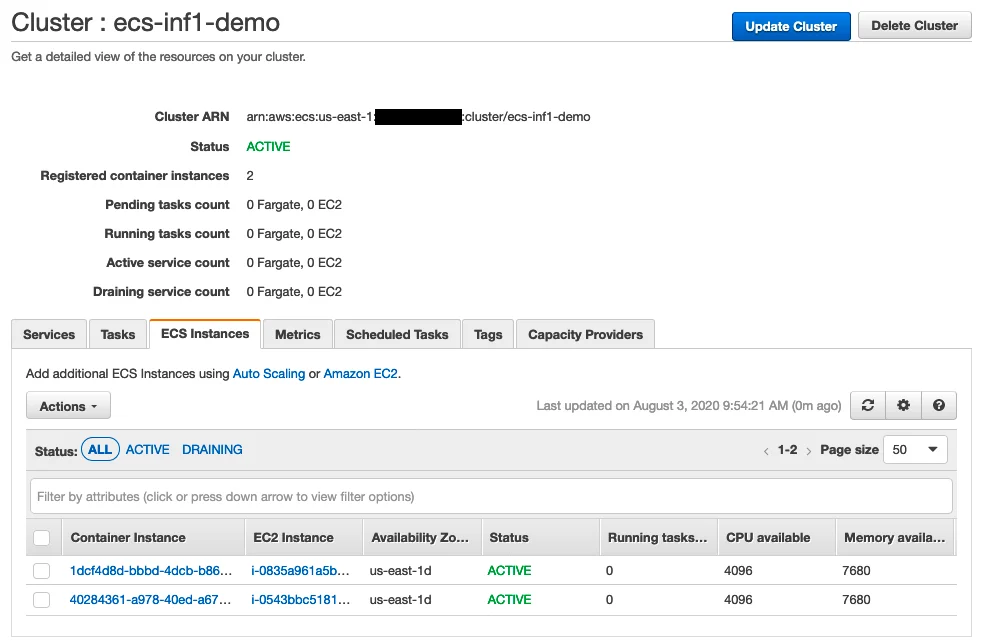
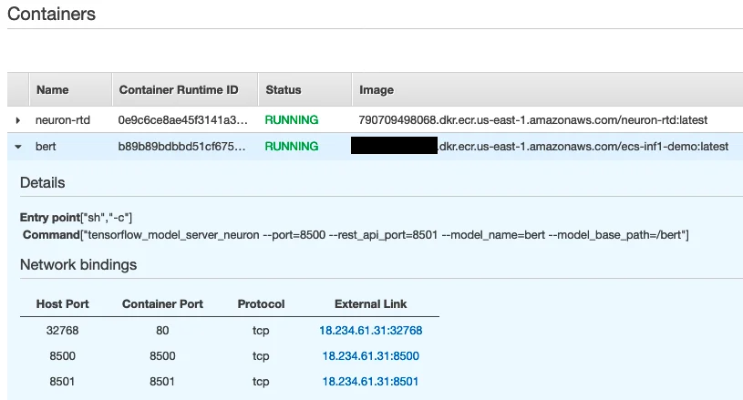

Published: 2020-08-14 | Originally published at AWS Blog
As machine learning and deep learning models become more sophisticated, hardware acceleration is increasingly required to deliver fast predictions at high throughput. Today, we’re very happy to announce that AWS customers can now use the Amazon EC2 Inf1 instances on Amazon Elastic Container Service (Amazon ECS) , for high performance and the lowest prediction cost in the cloud. For a few weeks now, these instances have also been available on Amazon Elastic Kubernetes Service (Amazon EKS) .
A primer on EC2 Inf1 instances
Inf1
instances were launched at AWS re:Invent 2019. They are powered by
AWS Inferentia
, a custom chip built from the ground up by AWS to accelerate machine learning inference workloads.
Inf1 instances are available in multiple sizes, with 1, 4, or 16 AWS Inferentia chips, with up to 100 Gbps network bandwidth and up to 19 Gbps EBS bandwidth. An AWS Inferentia chip contains four NeuronCores. Each one implements a high-performance systolic array matrix multiply engine, which massively speeds up typical deep learning operations such as convolution and transformers. NeuronCores are also equipped with a large on-chip cache, which helps cut down on external memory accesses, saving I/O time in the process. When several AWS Inferentia chips are available on an Inf1 instance, you can partition a model across them and store it entirely in cache memory. Alternatively, to serve multi-model predictions from a single Inf1 instance, you can partition the NeuronCores of an AWS Inferentia chip across several models.
Compiling Models for EC2 Inf1 Instances
To run machine learning models on
Inf1
instances, you need to compile them to a hardware-optimized representation using the
AWS Neuron SDK
. All tools are readily available on the
AWS Deep Learning AMI
, and you can also install them on your own instances. You’ll find instructions in the Deep Learning AMI
documentation
, as well as tutorials for TensorFlow, PyTorch, and Apache MXNet in the AWS Neuron SDK
repository
.
In the demo below, I will show you how to deploy a Neuron-optimized model on an ECS cluster of Inf1 instances, and how to serve predictions with TensorFlow Serving . The model in question is BERT , a state of the art model for natural language processing tasks. This is a huge model with hundreds of millions of parameters, making it a great candidate for hardware acceleration.
Creating an Amazon ECS Cluster
Creating a cluster is the simplest thing: all it takes is a call to the
CreateCluster
API.
$ aws ecs create-cluster --cluster-name ecs-inf1-demo
Immediately, I see the new cluster in the console.

Several prerequisites are required before we can add instances to this cluster:
ecsInstanceRole
.
ami-04450f16e0cd20356
.
sg-0994f5c7ebbb48270
.
admin
.
We also need to create a small user data file in order to let instances join our cluster. This is achieved by storing the name of the cluster in an environment variable, itself written to the configuration file of the ECS agent.
#!/bin/bash
echo ECS_CLUSTER=ecs-inf1-demo >> /etc/ecs/ecs.config
We’re all set. Let’s add a couple of
Inf1
instances with the
RunInstances
API. To minimize cost, we’ll request
Spot Instances
.
$ aws ec2 run-instances \
--image-id ami-04450f16e0cd20356 \
--count 2 \
--instance-type inf1.xlarge \
--instance-market-options '{"MarketType":"spot"}' \
--tag-specifications 'ResourceType=instance,Tags=[{Key=Name,Value=ecs-inf1-demo}]' \
--key-name admin \
--security-group-ids sg-0994f5c7ebbb48270 \
--iam-instance-profile Name=ecsInstanceRole \
--user-data file://user-data.txt
Both instances appear right away in the EC2 console.

A couple of minutes later, they’re ready to run tasks on the cluster.

Our infrastructure is ready. Now, let’s build a container storing our BERT model.
Building a Container for Inf1 Instances
The
Dockerfile
is pretty straightforward:
Here is the complete file.
FROM amazonlinux:2
EXPOSE 8500 8501
RUN echo $'[neuron] \n\
name=Neuron YUM Repository \n\
baseurl=https://yum.repos.neuron.amazonaws.com \n\
enabled=1' > /etc/yum.repos.d/neuron.repo
RUN rpm --import https://yum.repos.neuron.amazonaws.com/GPG-PUB-KEY-AMAZON-AWS-NEURON.PUB
RUN yum install -y tensorflow-model-server-neuron
COPY bert /bert
CMD ["/bin/sh", "-c", "/usr/local/bin/tensorflow_model_server_neuron --port=8500 --rest_api_port=8501 --model_name=bert --model_base_path=/bert/"]
Then, I build and push the container to a repository hosted in Amazon Elastic Container Registry (Amazon ECR) . Business as usual.
$ docker build -t neuron-tensorflow-inference .
$ aws ecr create-repository --repository-name ecs-inf1-demo
$ aws ecr get-login-password | docker login --username AWS --password-stdin 123456789012.dkr.ecr.us-east-1.amazonaws.com
$ docker tag neuron-tensorflow-inference 123456789012.dkr.ecr.us-east-1.amazonaws.com/ecs-inf1-demo:latest
$ docker push
Now, we need to create a task definition in order to run this container on our cluster.
Creating a Task Definition for Inf1 Instances
If you don’t have one already, you should first create an execution role, i.e. a role allowing the ECS agent to perform API calls on your behalf. You can find more information in the
documentation
. Mine is called
ecsTaskExecutionRole
.
The full task definition is visible below. As you can see, it holds two containers:
neuron-rtd
, that allows the BERT container to access NeuronCores present on the
Inf1
instance. The
AWS_NEURON_VISIBLE_DEVICES
environment variable lets you control which ones may be used by the container. You could use it to pin a container on one or several specific NeuronCores.
{
"family": "ecs-neuron",
"executionRoleArn": "arn:aws:iam::123456789012:role/ecsTaskExecutionRole",
"containerDefinitions": [
{
"entryPoint": [
"sh",
"-c"
],
"portMappings": [
{
"hostPort": 8500,
"protocol": "tcp",
"containerPort": 8500
},
{
"hostPort": 8501,
"protocol": "tcp",
"containerPort": 8501
},
{
"hostPort": 0,
"protocol": "tcp",
"containerPort": 80
}
],
"command": [
"tensorflow_model_server_neuron --port=8500 --rest_api_port=8501 --model_name=bert --model_base_path=/bert"
],
"cpu": 0,
"environment": [
{
"name": "NEURON_RTD_ADDRESS",
"value": "unix:/sock/neuron-rtd.sock"
}
],
"mountPoints": [
{
"containerPath": "/sock",
"sourceVolume": "sock"
}
],
"memoryReservation": 1000,
"image": "123456789012.dkr.ecr.us-east-1.amazonaws.com/ecs-inf1-demo:latest",
"essential": true,
"name": "bert"
},
{
"entryPoint": [
"sh",
"-c"
],
"portMappings": [],
"command": [
"neuron-rtd -g unix:/sock/neuron-rtd.sock"
],
"cpu": 0,
"environment": [
{
"name": "AWS_NEURON_VISIBLE_DEVICES",
"value": "ALL"
}
],
"mountPoints": [
{
"containerPath": "/sock",
"sourceVolume": "sock"
}
],
"memoryReservation": 1000,
"image": "790709498068.dkr.ecr.us-east-1.amazonaws.com/neuron-rtd:latest",
"essential": true,
"linuxParameters": { "capabilities": { "add": ["SYS_ADMIN", "IPC_LOCK"] } },
"name": "neuron-rtd"
}
],
"volumes": [
{
"name": "sock",
"host": {
"sourcePath": "/tmp/sock"
}
}
]
}
Finally, I call the
RegisterTaskDefinition
API to let the ECS backend know about it.
$ aws ecs register-task-definition --cli-input-json file://inf1-task-definition.json
We’re now ready to run our container, and predict with it.
Running a Container on Inf1 Instances
As this is a prediction service, I want to make sure that it’s always available on the cluster. Instead of simply running a task, I create an ECS
Service
that will make sure the required number of container copies is running, relaunching them should any failure happen.
$ aws ecs create-service --cluster ecs-inf1-demo \
--service-name bert-inf1 \
--task-definition ecs-neuron:1 \
--desired-count 1
A minute later, I see that both task containers are running on the cluster.

Predicting with BERT on ECS and Inf1
The inner workings of BERT are beyond the scope of this post. This particular model expects a sequence of 128 tokens, encoding the words of two sentences we’d like to compare for semantic equivalence.
Here, I’m only interested in measuring prediction latency, so dummy data is fine. I build 100 prediction requests storing a sequence of 128 zeros. Using the IP address of the BERT container, I send them to the TensorFlow Serving endpoint via grpc, and I compute the average prediction time.
Here is the full code.
import numpy as np
import grpc
import tensorflow as tf
from tensorflow_serving.apis import predict_pb2
from tensorflow_serving.apis import prediction_service_pb2_grpc
import time
if __name__ == '__main__':
channel = grpc.insecure_channel('18.234.61.31:8500')
stub = prediction_service_pb2_grpc.PredictionServiceStub(channel)
request = predict_pb2.PredictRequest()
request.model_spec.name = 'bert'
i = np.zeros([1, 128], dtype=np.int32)
request.inputs['input_ids'].CopyFrom(tf.contrib.util.make_tensor_proto(i, shape=i.shape))
request.inputs['input_mask'].CopyFrom(tf.contrib.util.make_tensor_proto(i, shape=i.shape))
request.inputs['segment_ids'].CopyFrom(tf.contrib.util.make_tensor_proto(i, shape=i.shape))
latencies = []
for i in range(100):
start = time.time()
result = stub.Predict(request)
latencies.append(time.time() - start)
print("Inference successful: {}".format(i))
print ("Ran {} inferences successfully. Latency average = {}".format(len(latencies), np.average(latencies)))For convenience, I’m running this code on an EC2 instance based on the Deep Learning AMI . It comes pre-installed with a Conda environment for TensorFlow and TensorFlow Serving, saving me from installing any dependencies.
$ source activate tensorflow_p36
$ python predict.py
On average, prediction took 56.5ms. As far as BERT goes, this is pretty good!
Ran 100 inferences successfully. Latency average = 0.05647835493087769
Getting Started
You can now deploy Amazon Elastic Compute Cloud (EC2)
Inf1
instances on
Amazon Elastic Container Service (Amazon ECS)
today in the US East (N. Virginia), US West (Oregon), US East (Ohio), Europe (Frankfurt), Europe (Ireland), Asia Pacific (Sydney), and Asia Pacific (Tokyo) regions. As
Inf1
deployment progresses, you’ll be able to use them with
Amazon Elastic Container Service (Amazon ECS)
in more regions.
Give this a try, and please send us feedback either through your usual AWS Support contacts, on the AWS Forum for Amazon Elastic Container Service (Amazon ECS) , or on the container roadmap on Github.
- JulienJulien is the Artificial Intelligence & Machine Learning Evangelist for EMEA . He focuses on helping developers and enterprises bring their ideas to life. In his spare time, he reads the works of JRR Tolkien again and again.